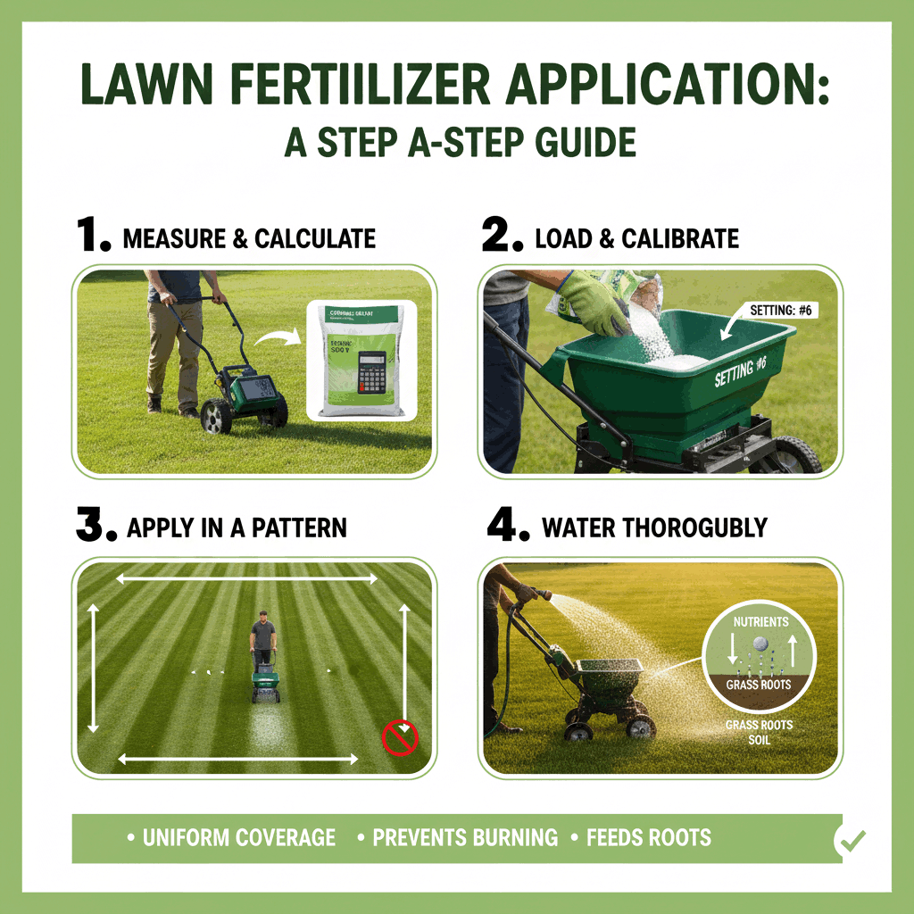

- Why is Lawn Fertilizer Application Important?
- Lawn fertilizer application is essential because the nutrients naturally present in the soil are often not enough to sustain the thick, green, and resilient turf that people desire. Unlike grass in a natural meadow, a well-kept lawn is under constant stress from mowing, foot traffic, and environmental factors.
- Fertilizer acts as a necessary supplement to replace vital nutrients lost over time, leading to significant health, aesthetic, and protective benefits for your lawn.
- 1. The Role of N-P-K (The Core Nutrients)
- Fertilizers primarily supply the three key macronutrients (known by their chemical symbols) that grass needs in large quantities: Nitrogen(N), Phosphorus(P), & Potassium(K).
- 2. Boosts Turf Resilience and Health
- Fertilization is an investment in your lawn's durability and ability to survive stress: Disease and Pest Resistance, Stress Tolerance, & Faster Recovery.
- 3. Improves Appearance and Density
- The visible results of proper fertilization are immediate and dramatic: Vibrant Green Color, Thick, Dense Turf, & Weed Suppression.
- 4. Maintains Soil Quality
- While grass makes its own food through photosynthesis, fertilizer helps sustain the process by supplementing soil nutrients: Replaces Lost Nutrients, & Supports Soil Microorganisms.
- What is Lawn Fertilizer Application?
- Lawn fertilizer application is the precise process of spreading or spraying nutrient-rich compounds onto your lawn to supplement the soil and provide the essential elements needed for grass health and growth.
- It is a core component of lawn care, focused on delivering the "food" your grass needs to stay green, thick, and resilient.
- Pricing
- Pricing is based on the size and specific requirements of your lawn. For a fast and effective lawn establishment, choose hydroseeding and see immediate improvements. Get in touch with us to learn more about our hydroseeding services.
